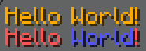
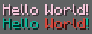
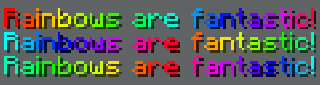
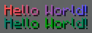

MiniMessage
MiniMessage is the chat format parser that we use on FarLands. You can read its documentation here.
This page is a simplified version of the official MiniMessage documentation, with a focus on the features that we allow on FarLands.
Tags
MiniMessage formatting is done using a concept called "tags". If you've ever used HTML or many other markup languages, the syntax for these tags should look familiar.
A tag in MiniMessage has a few different options for looks: <tag>,
</tag>, and <tag:arg:arg>.
<tag> is a start tag. This means that it starts a tag section. For
example <yellow>Hello will start a section with the tag yellow and
the content will be "Hello".
</tag> is a closing tag. These are not required, and if they are not
included, MiniMessage will automatically close the tag at the end of
your input. For example, <yellow>Hello World</yellow> and
<yellow>Hello World are identical.
Some tags require arguments to work, in order to pass arguments to a
tag, one must use this format: <tag:arg1:arg2>. Depending on the
contents of the argument, it may require to be quoted. To quote an
argument, wrap it in either ' or ", for example, <tag:"my argument"> or <tag:'<3'>
Colours
This feature is only enabled for members of the Adept rank and above.
To use a colour in chat, you can use the <_colorname_> tag. This tag
accepts the name of a Minecraft colour.
The accepted names are: black, dark_blue, dark_green, dark_aqua,
dark_red, dark_purple, gold, gray, dark_gray, blue, green,
aqua, red, light_purple, yellow, and white.
Note: On FarLands, the
blackcolour code is disabled for accessibility
Examples:
<gold>Hello World!</gold>
<red>Hello <blue>World</blue>!</red>
Which renders as

One can also use hexadecimal colours. This is done in the same format, but using the hexadecimal colour. See below for examples.
Note: On FarLands, all very dark hex codes are disabled for accessibility
Examples:
<#facade>Hello World!</#facade>
<#0bbd9e>Hello <#d7483d>World</#d7483d>!</#0bbd9e>
Which renders as

Decoration
This feature is only enabled for members of the Adept rank and above.
Decoration tags are tags which can apply formatting to the following text.
The valid tags are bold, italic, underlined, strikethrough, and
obfuscated.
These tags each have aliases that can be used in place of the actual name.
| Decoration | Alias(es) |
|---|---|
bold | b |
italic | em, i |
underlined | u |
strikethrough | st |
obfuscated | obf |
Note: On FarLands, the
obfuscatedtag is disabled for accessibility
Reset
The reset tag is used to clear all open tags, this is similar to the
&r code.
This tag does not need to be closed and is just used as <reset>.
Rainbow
This feature is only enabled for members of the Adept rank and above.
The rainbow tag can be used to create a rainbow.
The syntax for the tag is <rainbow>:[!][phase].
Arguments
phase- A number which represents the start from the beginning of the rainbow. If this is not specified, then it is0.!- a literal that reverses the rainbow if present
Examples:
<rainbow>Rainbows are fantastic!</rainbow>
<rainbow:5>Rainbows are fantastic!</rainbow>
<rainbow:!5>Rainbows are fantastic!</rainbow>
Which renders as

Gradient
This feature is only enabled for members of the Adept rank and above.
The gradient tag can be used to create a gradient between two or more
colours.
Syntax: <gradient:[color0]:[...colors]>
Arguments
color- Any colour that is discussed in the colours section
Examples:
<gradient:red:blue>Hello World!</gradient>
<gradient:#09816b:#00aa00:#09816b>Hello World!</gradient>
Which renders as
